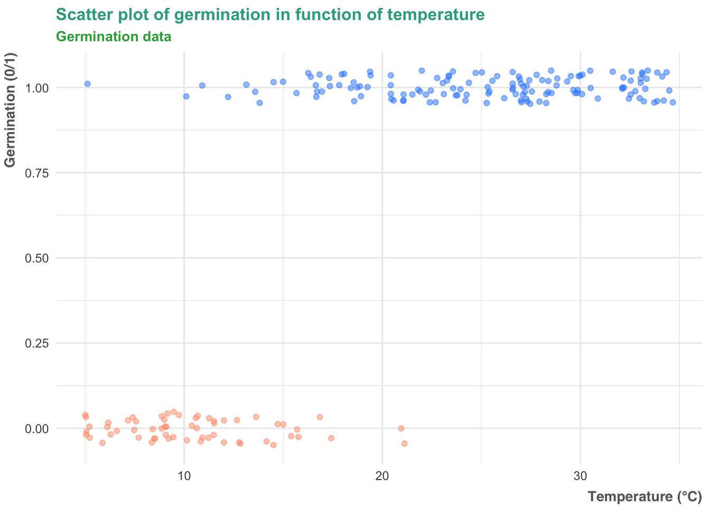
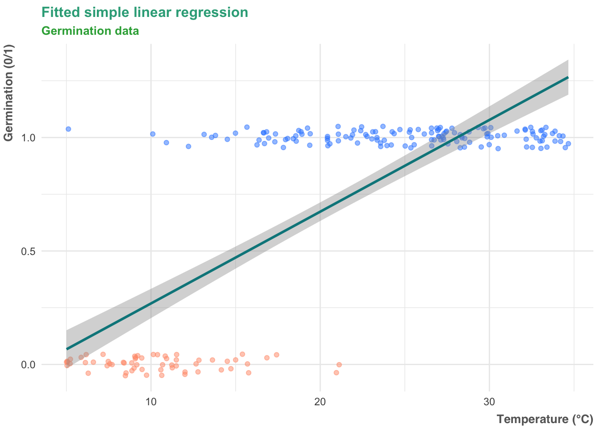
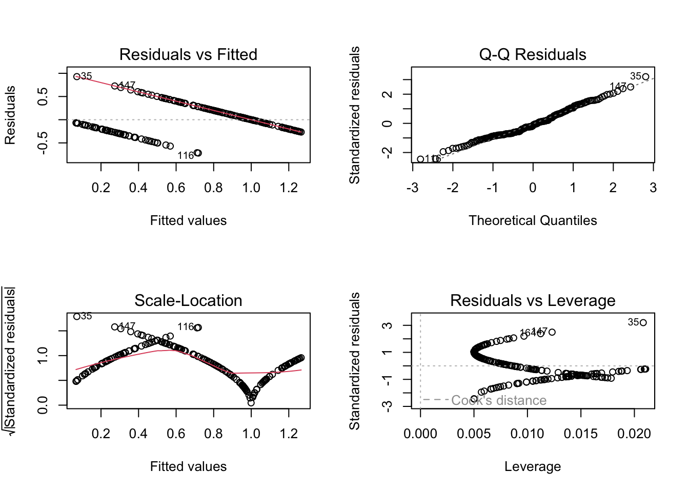
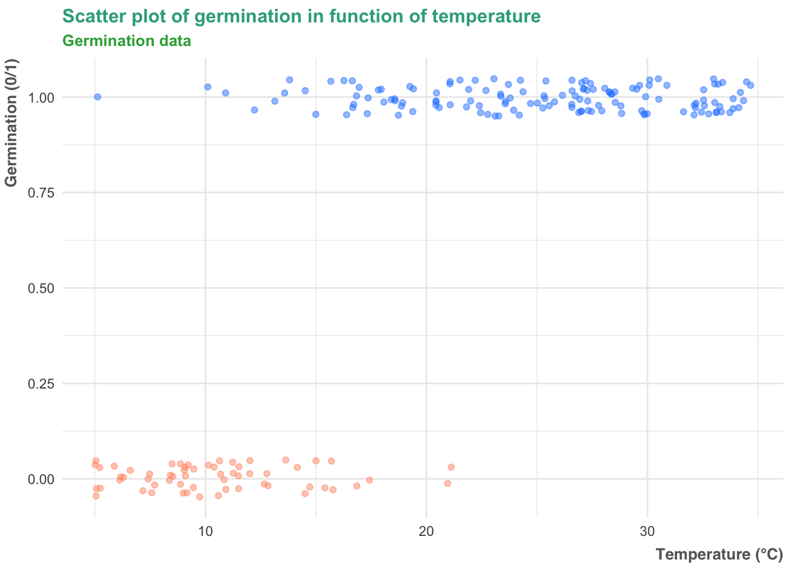
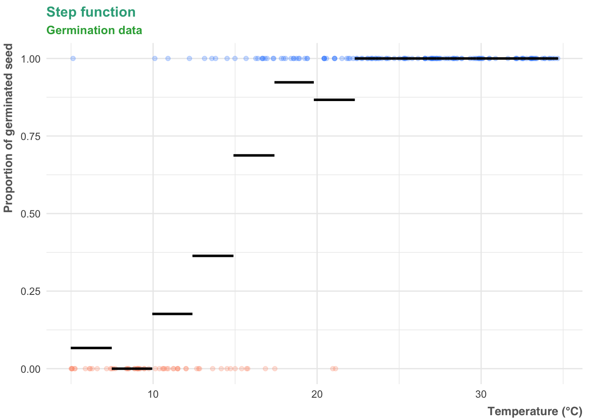
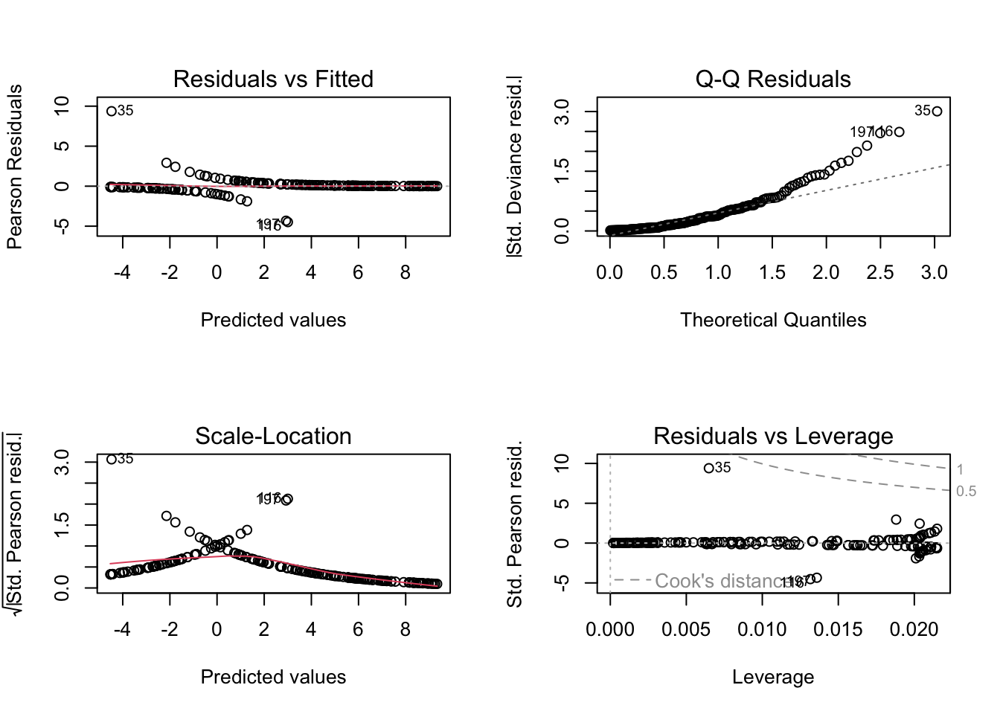
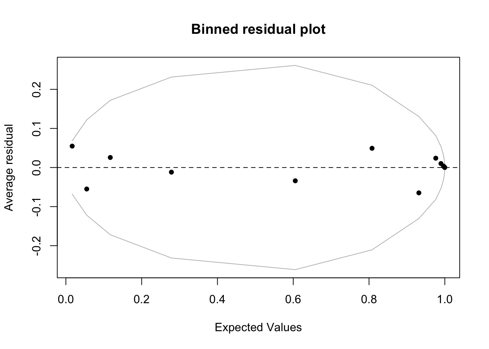

Régression logistique : Modéliser des données de proportion
Page de cours en construction.
Ce chapitre résumé est très largement inspiré du livre Régression avec R de Pierre-André Cornillon, Nicolas Hengartner, Eric Matzner-Lober et Laurent Rouvière.
Préliminaires
Chargement des pacquets
Nous débutons en chargeant un ensemble de paquets pour la manipulation de données, des représentations graphiques et l’utilisation du modèle linéaire généralisé.
Afficher le code
if (!require(tidyverse)) install.packages("tidyverse")if (!require(knitr)) install.packages("knitr")if (!require(GGally)) install.packages("GGally")if (!require(MASS)) install.packages("MASS")if (!require(arm)) install.packages("arm")library(tidyverse) # manipulation and advanced data visualisationlibrary(knitr) # export and format for R notebooklibrary(GGally) # extension of ggplot2library(MASS) # modern applied statistics with Slibrary(arm) # generalised linear model
Le bloc de codes suivant permet de fixer certains paramètres de représentation graphique ggplot que nous réutiliserons tout au long de ce chapitre.
Afficher le code
# default ggplot themeset_theme(# black and white theme: defaut theme of ggplot2theme_minimal() +# specify my parameterstheme(# title styleplot.title =element_text(size =12, # size of titlecolour ="#3a8", # color of titleface ="bold"), # face of title# subtitle styleplot.subtitle =element_text(size =10, # size of subtitlecolour ="#3a4", # colour of subtitleface ="bold"), # face of subtitle# axis title styleaxis.title =element_text(size =10, # size of title of axisfamily ="sans", # family of title of axisface ="bold", # face of title of axiscolour ="grey40"), # colour of title of axis# axis x title styleaxis.title.x =element_text(hjust =1, # horizontal adjustment of labelsvjust =-0.5), # vertical adjustment of labels# axis y title styleaxis.title.y =element_text(hjust =1, # horizontal adjustment of labelsvjust =2, # vertical adjustment of labelsangle =90), # angle adjustment of labels# legend positionlegend.position ="none" ))
Contexte & Chargement des données
Étudions la germination d’une graine en fonction de la température du sol. Le jeu de données germination.csv contient pour chaque échantillon : - la température du sol en degré ; et - si la graine a germé (1), ou si elle n’a pas germé (0).
'data.frame': 200 obs. of 2 variables:
$ temperature: num 32.4 33.1 13.6 29.9 24.3 ...
$ germination: int 1 1 1 1 1 1 1 0 1 1 ...
Afficher le code
summary(graine)
temperature germination
Min. : 5.007 Min. :0.0
1st Qu.:12.749 1st Qu.:0.0
Median :21.662 Median :1.0
Mean :20.666 Mean :0.7
3rd Qu.:27.824 3rd Qu.:1.0
Max. :34.667 Max. :1.0
1 Limite du modèle linéaire
Commençons par essayer d’ajuster un modèle statistique simple, celui d’une régression linéaire.
1.1 Premières visualisations
Afficher le code
plot.graine <-ggplot( graine, aes(x = temperature, y = germination,color =factor(germination)) ) +geom_jitter(height =0.05, alpha =0.5 ) +scale_color_manual(values =c("#F97", "#38F") ) +labs(title ="Scatter plot of germination in function of temperature",subtitle ="Germination data",x ="Temperature (°C)", y ="Germination (0/1)" )plot.graine

1.2 Ajustement d’un modèle de régression linéaire
Bien que le graphe précédent ne soit pas convaincant quant à une relation linéaire entre la germination et la température du sol, nous pourrions être tentés d’ajuster un modèle linéaire.
ggplot( graine, aes(x = temperature, y = germination,color =factor(germination)) ) +geom_jitter(height =0.05, alpha =0.5 ) +scale_color_manual(values =c("#F97", "#38F") ) +geom_smooth(method = lm, formula = y ~ x,se =TRUE, color ='turquoise4' ) +labs(title ="Fitted simple linear regression",subtitle ="Germination data",x ="Temperature (°C)", y ="Germination (0/1)" )

Afficher le code
summary(lm.graine)
Call:
lm(formula = germination ~ temperature, data = graine)
Residuals:
Min 1Q Median 3Q Max
-0.71839 -0.21041 -0.04024 0.19647 0.92862
Coefficients:
Estimate Std. Error t value Pr(>|t|)
(Intercept) -0.135566 0.053252 -2.546 0.0117 *
temperature 0.040431 0.002373 17.036 <2e-16 ***
---
Signif. codes: 0 '***' 0.001 '**' 0.01 '*' 0.05 '.' 0.1 ' ' 1
Residual standard error: 0.2933 on 198 degrees of freedom
Multiple R-squared: 0.5944, Adjusted R-squared: 0.5924
F-statistic: 290.2 on 1 and 198 DF, p-value: < 2.2e-16
Étudions les résidus.
Afficher le code
par(mfrow =c(2,2))plot(lm.graine)

Les résidus ne semblent pas validés le modèle linéaire. Même si ces derniers ne le remettait pas en cause, nous aurions quelques difficultés en termes de prévision.
Cependant le modèle prévoit des probabilités de germination inférieure à 0 pour 0°C, et supérieure à 1 pour 35°C. Ce qui n’est pas réaliste.
Le princiapl problème est que la variable réponse, la germination n’est pas quantitative continue ce que requiert le modèle de régression linéaire simple (ou multiple). Un autre modèle est donc nécessaire pour ce type de données (dont la réponse est binaire).
2 Régression logistique
Repartons du graphique suivant.
Afficher le code
plot.graine

Nous voyons sur le graphique que la germination a tendance a être plus présente pour des températures élevées. Afin de mieux quantifier ce lien, nous allons étudier \(p(x)\) la probabilité de germination à température\(x\). Pour se donner une idée plus précise de l’allure de la fonction \(p(x)\), nous pouvons représenter l’évolution de la proportion de graines germées sur différentes classes de températures.
plot.proportion <-ggplot() +geom_jitter(data = graine,aes(x = temperature, y = germination,color =factor(germination)),height =0.0, alpha =0.25 ) +scale_color_manual(values =c("#F97", "#38F") ) +# add segments of proportion of germination on the classes of temperaturesgeom_segment(data = donnees.proportions,aes(x = xmin, xend = xmax, y = proportion, yend = proportion),color ="black", linewidth =1, ) +labs(title ="Step function",subtitle ="Germination data",x ="Temperature (°C)",y ="Proportion of germinated seed" ) +ylim(0, 1)plot.proportion

La liaison entre la germination et la température devient beaucoup plus lisible.
2.1 Modélisation
Nous cherchons à modéliser une variable binaire \(Y\) (germination) en fonction des valeurs prises par une variable quantitative \(X\) (temperature). Nous allons nous intéresser à la loi de \(Y\) pour chaque valeur que \(X\) peut prendre.
Une approche naturelle consiste à modéliser cette loi par une loi de Bernoulli de paramètre \(p\in[0,1]\) inconnue. (Nous pouvons supposer sans perte de généralités que \(Y\) prend ses valeurs dans \(\{0,1\}\).) Afin de prendre en compte la température pour expliquer la variable \(Y\), nous allons faire varier le paramètre de la loi de Bernoulli avec la température : pour une graine à température de sol fixée \(x\), \(Y\) va suivre une loi de Bernoulli de paramètre \(p(x)\), où \(p(x)\) désigne la probabilité de l’événement \(\{Y=1\}\) (la graine a germé) pour un sol de température \(x\).
Nous faisons ici l’hypothèse qu’il existe une transformation \(g\) telle que : \[ g\big( p(x_i) \big) \:\: = \:\: \beta_0 \: + \: \beta_1 \, x_i \, . \]
Nous ne savons pas si une telle fonction \(g\) existe, et il reste donc à la spécifier en fonction du contexte.
2.2 Transformation logit
Pour ajuster un modèle à ces données, nous allons nous ramener à un modèle linéaire par une transformation logistique.
Reprenons le graphe suivant :
Afficher le code
plot.proportion
La fonction en escalier représentée dépend du regroupement effectué et peut donc changer en fonction des classes choisies. Par construction, il y a des sauts à chaque regroupement alors que nous pouvons imaginer sans mal que la proportion évolue de façon continue avec la température. Afin de lisser la fonction en escaliers, il est d’usage d’utiliser une fonction de type sigmoïde, par exemple \[ \frac{e^{\beta_1 + \beta_2x}}{1+e^{\beta_1+\beta_2x}} \, , \] où les paramètres \(\beta_1,\beta_2\in\mathbb{R}\) devront être choisis de manière à ajuster au mieux la fonction en escaliers.
Cette représentation suggère de modéliser la probabilité \(p(x)\) de germination pour un sol à température \(x\) par la fonction : \[ p_\beta(x) \:\: = \:\: \frac{e^{\beta_1 + \beta_2x}}{1+e^{\beta_1+\beta_2x}} \, . \] La fonction \(u \mapsto \frac{e^u}{1+e^u}\) étant bijective, le modèle précédent se réécrit comme : \[ \mathrm{logit}\big( p_\beta(x) \big) \:\: = \:\: \log\Big( \frac{p_\beta(x)}{1-p_\beta(x)} \Big) \:\: = \:\: \beta_1 \: + \: \beta_2 x \, . \]
Il semble donc qu’une telle transformation logistique puisse décrire le lien entre la probabilité de germination et la température du sol.
2.3 Analyse sur R
2.3.1 Ajustement du modèle
Le modèle de régression logistique peut être ajusté par la fonction glm() (pour generalized linear model).
Afficher le code
glm.graine <-glm(formula = germination ~ temperature, # symbolic description of the model to be fitteddata = graine, # data framefamily = binomial # description of the error distribution and link function to be used in the model)
2.3.2 Estimation des coefficients
Comme pour la fonction lm(), la fonction summary() permet d’obtenir l’estimation des paramètres de la fonction logistique.
Afficher le code
summary(glm.graine)
Call:
glm(formula = germination ~ temperature, family = binomial, data = graine)
Coefficients:
Estimate Std. Error z value Pr(>|z|)
(Intercept) -6.86701 1.11764 -6.144 8.04e-10 ***
temperature 0.46732 0.07286 6.414 1.42e-10 ***
---
Signif. codes: 0 '***' 0.001 '**' 0.01 '*' 0.05 '.' 0.1 ' ' 1
(Dispersion parameter for binomial family taken to be 1)
Null deviance: 244.35 on 199 degrees of freedom
Residual deviance: 80.83 on 198 degrees of freedom
AIC: 84.83
Number of Fisher Scoring iterations: 7
Comme pour une régression linéaire, nous obtenons un tableau Coefficients comportant les différentes informations sur les coefficients \(\beta_j\).
Afficher le code
summary(glm.graine)$coefficients
Estimate Std. Error z value Pr(>|z|)
(Intercept) -6.8670082 1.1176380 -6.144215 8.036000e-10
temperature 0.4673233 0.0728597 6.414016 1.417356e-10
Ce tableau comporte pour chaque variable (ligne) :
son estimation \(\hat{\beta}_j\) (colonne Estimate) ;
son écart-type estimé \(\hat{\sigma}_j\) (colonne Std. Error) ;
la valeur observée de la statistique du test d’hypothèses \((\mathcal{H}_0):\beta_j = 0\) contre \((\mathcal{H}_1):\beta_j\ne0\) (colonne z value) ; et
la \(p\)-valeur du test précédent (colonne Pr(>|z|)).
2.3.3 Interprétation : Odds ratio & Intervalles de confiance
Les coefficients peuvent être difficiles à interpréter dans le cadre d’une régression logistique, car ils sont exprimés sur l’échelle du logit. C’est pourquoi nous introduisons les cotes ou odds, et le rapport de cotes ou odds ratio.
2.3.3.1 L’odds
Nous définissons l’odds de germination à la température \(x\) est \[ \mathrm{odds}(x) \: = \: \frac{p(x)}{1-p(x)} \, . \] C’est le rapport entre la probabilité de succès et celle d’échec (on peut l’interpréter comme un “rapport de chances”) : si \(p(x) = 0.75\), alors \(\mathrm{odds}(x) = 3\), nous dirons ainsi que les chances de succès de germination sont de 3 contre 1.
Attention toutefois à ne pas confondre un odds avec une probabilité (il prend ces valeurs dans \([0,+\infty[\)).
2.3.3.2 Le modèle sur l’échelle des log-odds
Rappelons que le modèle de régression logistique peut s’écrire : \[ \mathrm{logit}\big( p(x) \big) \: = \: \log\big(\mathrm{odds}(x)\big) \: = \: \beta_0 \: + \: \beta_1 \, x \, \, , \] ou, de façon équivalente, \[ \mathrm{odds}(x) \: = \: e^{\beta_0} \: e^{\beta_1 \, x} \, . \]
\(\beta_0\) est le log-odds en \(x=0\) : \(e^{\beta_0}\) est l’odds de germination à 0°C. Ce n’est interprétable que si \(x=0\) a un sens. Sinon il est possible de centrer la covariable.
Si nous augmentons \(x\) d’une unité, alors nous obtenons : \[ \log\big( \mathrm{odds}(x+1) \big) \: - \: \log\big( \mathrm{odds}(x) \big) \: = \: \beta_1 \, , \] ou, autrement écrit, \[ \frac{\mathrm{odds}(x+1)}{\mathrm{odds}(x)} \: = \: e^{\beta_1} \, . \] Le nombre \(e^{\beta_1}\) est l’odds ratio associé à une augmentation d’une unité de \(x\). Il ne dépend pas de \(x\). Pour une augmentation de \(\Delta\) unités, l’odds ratio vaut \(e^{\Delta \, \beta_1}\).
La lecture peut s’effectuer comme suit : - \(\beta_1 >0\) si, et seulement si, \(e^{\beta_1}>1\) si, et seulement si, \(p(x)\) croît avec \(x\) ; - \(\beta_1 = 0\) si, et seulement si, \(e^{\beta_1}=1\) si, et seulement si, la variable explicative n’a pas d’effet ; - \(\beta_1 <0\) si, et seulement si, \(e^{\beta_1}<1\) si, et seulement si, \(p(x)\) décroît avec \(x\).
Ici, \(\hat\beta_1 = 0.467\) et odds ratio du coefficient \(\beta_1\) est \(e^{0.467} \simeq 1.60\). Chaque degré supplémentaire multiplie l’odds de germination de 1.60 (soit une augmentation d’environ 60% de l’odds).
Terminons par une remarque importante. Multiplier l’odds par 1.60 ne multiplie pas la probabilité de germination par 1.60. L’effet sur la probabilité \(p(x)\) dépend du niveau de départ.
2.3.3.3 Intervalle de confiance
Il est possible de construire des intervalles de confiance pour le coefficient \(\beta_1\) et, a fortiori pour l’odds ratio en prenant l’exponentielle.
Afficher le code
confint(glm.graine, level =0.95) # IC for beta (vraisemblance)
Waiting for profiling to be done...
2.5 % 97.5 %
(Intercept) -9.3735235 -4.9351578
temperature 0.3427375 0.6317178
Afficher le code
exp(confint(glm.graine, level =0.95)) # IC for odds-ratio
Waiting for profiling to be done...
2.5 % 97.5 %
(Intercept) 8.494356e-05 0.007189326
temperature 1.408799e+00 1.880838759
2.3.4 Test du rapport de vraisemblance
Le test du rapport de vraisemblance ou LRT (pour Likelihood Ratio Test) permet de comparer deux modèles emboîtés, ajustés sur les mêmes données. Nous présentons ici le test de validité globale : nous testons si le coefficient \(\beta_1\) (ou au moins l’un des coefficients dans un cadre multivarié, à l’exception de la constante), est non nul. C’est l’analogue, pour la régression, du test global de Fisher de la régression linéaire.
Dans notre contexte simple (à une variable explciative), il s’agit de tester : \[ (\mathcal{H}_0):\beta_1 = 0 \quad \mathrm{contre} \quad (\mathcal{H}_1):\beta_1\ne0 \, . \] Notons \(D_{\text{nul}}\) la déviance du modèle réduit (constante seule) et \(D_{\text{mod}}\) celle du modèle complet. La statistique de test est \[ \Lambda \: = \: D_{\text{nul}} \, - \, D_{\text{mod}} \: = \: 2 \big(\ell(\hat\beta_1)) - \ell(\hat\beta_{1}^{(0)}) \big) \, , \] où \(\ell\) désigne la log-vraisemblance maximisée.
Sous \((\mathcal{H}_0)\), l’estimateur \(\Lambda\) suit asymptotiquement une loi du \(\chi^2(k)\), où \(k\) est le nombre de coefficients testés (ici \(k = 1\)). Nous rejetons l’hypothèse \((\mathcal{H}_0)\) au risque d’erreur de 1ère espèce \(\alpha\), si la \(p\)-valeur du test est \(< \alpha\), ou, de façon équivalente, si l’estimation du rapport de vraisemblance \(\Lambda_{\text{obs}}\) est \(> q^{\chi^2}_{1-\alpha}\).
Afficher le code
glm.nul <-glm(formula = germination ~1, # model without variabledata = graine,family = binomial)anova( glm.nul, # object containing the results returned by a model fitting function glm.graine, # additional object of the same typetest ="LRT"# test to be realised )
Analysis of Deviance Table
Model 1: germination ~ 1
Model 2: germination ~ temperature
Resid. Df Resid. Dev Df Deviance Pr(>Chi)
1 199 244.35
2 198 80.83 1 163.51 < 2.2e-16 ***
---
Signif. codes: 0 '***' 0.001 '**' 0.01 '*' 0.05 '.' 0.1 ' ' 1
Le tableau d’analyse de variance renvoie : - Df : nombre de degrés de liberté ; - Deviance : estimation de l’estimateur \(\Lambda\), \(\Lambda_{\text{obs}} = 163.51\) ; - Pr(>Chi) : \(p\)-valeur du test du rapport de vraisemblance.
Ici la \(p\)-valeur est très basse (< 2.2e-16), nous rejetons donc l’hyptohèse \((\mathcal{H}_0)\) : au risque d’erreur de 1ère espèce de 5%, le modèle complet semble mieux s’adapter aux données que le modèle nul.
2.3.5 Test de Hosmer et Lemeshow
Pour de données individuelles (ou lorsque nous avons peu de répétition sur les points du design), la déviance résiduelle ne suit pas, même approximativement, une loi du \(\chi^2\) : elle ne peut donc pas servir de test d’adéquation. Le test de Hosmer et Lemeshow contourne ce problème en regroupant les observations.
L’hypothèse \((\mathcal{H_0})\) stipule que le modèle logistique considéré est correctement spécifié, c’est-à-dire que les observations \(y_i\) sont des réalisations indépendantes de lois de Bernoulli de paramètre \(p_\beta(x_i)\) avec \[ \mathrm{logit}\big( p_\beta(x_i) \big) \: = \: \beta_0 \: + \: \beta_1 x_i \, . \] L’hypothèse alternative \((\mathcal{H}_1)\) est la négation de \((\mathcal{H}_0)\).
Le principe de ce test est le suivant : a. on calcule des probabilités ajustées \(\hat p_i\) ; b. on trie des probabilités ajustées afin de former \(G\) groupes (par défaut, \(G = 10\), correspondant aux déciles) ; et c. dans chaque groupe \(g\) de taille \(n_g\), on compare le nombre observé de succès \(O_g = \sum_{i\in g} y_i\) au nombre attendu \(E_g = \sum_{i\in g} \hat{p}_i\).
La statistique de test est : \[ \hat{C} \: = \: \sum_{g=1}^G \frac{\big(O_g \, - \, E_g\big)^2}{E_g \, \big(1 \, - \, \frac{E_g}{n_g}\big)} \, , \] et suit approximativement, sous \((\mathcal{H}_0)\), une loi du \(\chi^2(G-2)\).
Warning in logitgof(obs = graine$germination, exp = fitted(glm.graine)): At
least one cell in the expected frequencies table is < 1. Chi-square
approximation may be incorrect.
Afficher le code
hosmer # statistic, Df, p-value
Hosmer and Lemeshow test (binary model)
data: graine$germination, fitted(glm.graine)
X-squared = 1.4193, df = 8, p-value = 0.994
La statistique de test suit une loi du \(\chi^2\) à 8 degrés de liberté, et au risque d’erreur de 1ère espèce de 5%, nous ne rejetons pas \((\mathcal{H}_0)\) : le modèle logistique avec toutes ses variables est satisfaisant.
Pour terminer cette partie, rappelons que ne pas rejeter \((\mathcal{H}_0)\) ne prouve pas que le modèle est “vrai”. Pour aller en ce sens, il est nécessaire de calculer la puissance de ce test. Or ce test possède une puissance limitée, et son résultat dépend du choix de \(G\).
2.4 Prédiction
Par défaut, la fonction predict() renvoie la valeur sur l’échenlle de la fonction de lien, c’est-à-dire le log-odds estimé \(\hat{\beta}_0 + \hat{\beta}_1 \, x_0\). L’option type = response permet d’obtenir la probabilité estimée \[ \hat{p}(x_0) \: = \: \frac{1}{1 + e^{-(\hat{\beta}_0 \, + \, \hat{\beta_1} \, x_0)}} \, . \]
Afficher le code
# for log-oddspredict( glm.graine, newdata =list(temperature =19.4))
1
2.199063
Afficher le code
# for probabilitypredict( glm.graine, newdata =list(temperature =19.4),type ="response")
1
0.9001654
Pour un intervalle de confiance sur \(p(x_0)\), nous commençons par construire sur l’échelle de la fonction lien, puis nous appliquons la fonction logistique réciproque plogis(). L’intervalle obtenu reste ainsi dans \([0,1]\).
Afficher le code
pred <-predict( glm.graine, newdata =list(temperature =19.4),type ="response",se.fit =TRUE)ic.lien <- pred$fit +c(-1, 1) *qnorm(0.975) * pred$se.fitplogis(pred$fit) # estimation of p(19.4)
1
0.7109835
Afficher le code
plogis(ic.lien) # IC at level 0.95 for p(19.4)
[1] 0.6948275 0.7266207
Il s’agit d’un intervalle de confiance sur la probabilité de germination à 19.4°C, et non d’un intervalle de prédiction pour une graine donnée, dont l’issue vaut 0 ou 1. Comme en régression linéaire, nous éviterons d’extrapoler hors du domaine des températures observées.
2.5 Analyse des résidus & Validation du modèle
Comme pour le modèle linéaire, les résidus mesurent l’écart entre chaque observation et sa valeur ajustée par le modèle. Les objectifs sont identiques : identifier des valeurs aberrantes, des points influents, un défaut de spécification, etc.
Les résidus bruts \(y_i - \hat{p}_i\) ne sont pas homoscédastiques car \(\mathrm{Var}(\mathbf{Y}_i) = p_i(1-p_i)\). Nous leur préférons donc :
les résidus de Pearson\[ r_i^P \: = \: \frac{y_i - \hat{p}_i}{\sqrt{\hat{p}_i (1-\hat{p}_i)}} \, , \]
les résidus de déviance\[ r_i^D \: = \: \mathrm{sign}\big(y_i - \hat{p}_i\big) \, \sqrt{d_i} \, \qquad \text{où } d_i \: = \: -2 \, \big(y_i \log \hat{p}_i + (1-y_i) \log(1-\hat{p}_i) \big) \, , \] de sorte que \(\sum_i (r_i^P)^2\) est la statistique de Pearson et \(\sum_i (r_i^D)^2\) la déviance résiduelle. Les versions standardisées sont les résidus divisés par \(\sqrt{1-h_{ii}}\), où \(h_{ii}\) est le levier de l’observation \(i\).
L’analyse des résidus est essentiellement graphique.
Afficher le code
par(mfrow =c(2, 2))plot(glm.graine)

Les graphiques consistent à tracer des “index plot” avec en abscisse le numéro de l’observation et en ordonnée le résidu. En présence de données individuelles, on observera fréquemment une structure sur ce type de représentation. Le graphique Q-Q Residuals n’est pas pertinent ici : la régression logistique ne suppose aucune normalité des résidus. Le graphique Residuals vs Leverage reste utile pour repérer des points influents.
Afficher le code
prev.lin <-predict(glm.graine)res_P <-residuals(glm.graine, type ="pearson") # pearsonres_PS <-rstandard(glm.graine, type ="pearson") # pearson standardiseres_D <-residuals(glm.graine, type ="deviance") # deviance res_DS <-rstandard(glm.graine, type ="deviance") # deviance standardise
Sur les graphiques de droite, nous observons deux branches. Pour des données binaires, le résidu est une fonction déterministe de \(\hat{p}_i\) et de \(y_i\). Par exemple, pour les résidus de Pearson, $r_i^P = si \(y_i = 1\) et $r_i^P = si \(y_i = 0\). Ce type de graphique est donc peu lisible en données individuelles.
Les graphiques de gauche (index plot) permettent de repérer les observations aberrantes, ainsi qu’une éventuelle structure liée à l’ordre des observations, signe possible d’une dépendance non modélisée. En revanche, ils ne renseignent pas sur la forme du modèle (linéarité du logit en \(x\)). Pour cela, nous utilisons les résidus groupés : les résidus sont moyennés par classes de valeurs ajustées ; si le modèle est bien spécifié, ces moyennes fluctuent autour de 0 (dans une bande d’environ \(\pm\) 2 écarts-types).
Afficher le code
binnedplot(x =fitted(glm.graine), # expected values from the logistic regressiony =residuals(glm.graine, type ="response"), # residual values from logistic regression)

3 Régression logistique pour des variables qualitatives
Lorsque la variable explicative \(X\) est qualitative, l’écriture \(\beta_0 + \beta_1 \, x\) n’a plus de sens. Considérons le cas où \(X\) prend ses valeurs dans \(\{A,B,C\}\). L’écriture du modèle reprend alors les mêmes idées d’écriture que dans le cas d’une régression linéaire factorielle : \[ \mathrm{logit}\big(p_\beta(x)\big) \: = \: \beta_0 \: + \: \beta_1 \mathbf{1}_{A}(x) \: + \beta_2 \mathbf{1}_{B}(x) \: + \beta_3 \mathbf{1}_{C}(x) \: , \] où \(\mathbf{1}_A(x) = 1\) si \(x\) possède la modalité \(A\) et \(0\) sinon ; de même pour \(\mathbf{1}_B\) et \(\mathbf{1}_C\).
Ce modèle est sur-paramétré : il comporte quatre paramètres pour seulement trois modalités (\(\mathbf{1}_A(x) + \mathbf{1}_B(x) + \mathbf{1}_C(x) = 1\) est colinéaire à la constante). Il faut donc imposer une contrainte. Par défaut, R utilise une modalité de référence (contraste “traitement”) : le coefficiement de la première modalité (prise par ordre alphabétique) est fixé à 0. Avec \(A\) comme référence, \(\beta_1\) est fixé à 0 et : \[ \mathrm{logit}\big(p_\beta(x)\big) \: = \: \beta_0 \: + \beta_2 \mathbf{1}_{B}(x) \: + \beta_3 \mathbf{1}_{C}(x) \: . \]
Ainsi \(\mathrm{logit}(p(A)) = \beta_0\), \(\mathrm{logit}(p(B)) = \beta_0 + \beta_2\) et \(\mathrm{logit}(p(C)) = \beta_0 + \beta_3\). En termes d’odds ratios :
\(e^{\beta_0}\) est l’odds de la modalité de référence \(A\) ;
\(e^{\beta_2}\) est l’odds ratio de \(B\) par rapport à \(A\) ;
\(e^{\beta_3}\) est l’odds ratio de \(C\) par rapport à \(A\) ; et
\(e^{\beta_3 - \beta_2}\) est l’odds ratio de \(C\) par rapport à \(B\).
Comme exemple, imaginons que nous cherchions à expliquer une variable binaire \(Y\) par une varible explicative \(X\) à valeurs dans \(\{A,B,C\}\). Nous simulons un échantillon de taille 100 tel que la loi de \(X\) est uniforme sur \(\{A,B,C\}\) et la loi conditionnelle de \(Y\) sachant \(X\) est définie par : \[ \mathcal{L}\mathrm{oi}\big(Y\mid X=A\big) \: = \: \mathcal{L}\mathrm{oi}\big(Y\mid X=C\big) \: = \: \mathcal{B}\mathrm{er}(0.8) \quad \text{et} \quad \mathcal{L}\mathrm{oi}\big(Y\mid X=B\big) \: = \: \mathcal{B}\mathrm{er}(0.2) . \]
Les “vrais” coefficients (référence \(A\)) sont donc \(\beta_0 = \log 4 \sime 1.39\), \(\beta_2 = -2\log 4 \simeq -2.77\) et \(\beta_3 = 0\).
Le moèle logistique s’ajuste alors de la manière suivante :
Afficher le code
glm.quali <-glm(formula = Y ~ X, data = donnees,family = binomial)coef(glm.quali)
(Intercept) XB XC
1.8562980 -3.2913825 -0.4010108
Aucun coefficient ne semble être renvoyé pour la modalité \(A\) : c’est la modalité de référence, le premier niveau de levels(X). On lit alors les estimations : \(\hat{\beta}_0 = 1.8562980\), \(\hat{\beta}_2 = -3.2913825\) et \(\hat{\beta}_3 = -0.4010108\).
Afficher le code
exp(coef(glm.quali)) # odds (A) and odds ratio (B/A, C/A)
Ces coefficients sont à interpréter en fonction de la contrainte. Ici, sous la contrainte \(\beta_1=0\) :
\(\hat{\beta}_2\) étant négatif, nous pouvons dire que la probabilité que \(Y=1\) est plus faible lorsque \(X\) vaut \(B\) plutôt que lorsque \(X\) vaut \(A\) ;
\(\hat{\beta}_3\) étant proche de \(0\), nous en déduisons que lorsque \(X\) est égal à \(C\) la probabilité de l’événement \(Y=1\) est proche de la probabilité de ce même événement lorsque \(X\) vaut \(A\).
(Ces interprétations sont cohérentes avec le procédé de simulation.)
Les interactions se traitent de la même façon que pour les modèles de régression linéaire factorielle (ANOVA et ANCOVA), et leur traitement ne sera donc pas traité ici.
4 Régression logistique multiple
Il est naturel de penser que la germination dépend de plusieurs variables environnementales, et pas seulement de la température du sol. Le fichier germinationMulti.csv contient, en plus de la température, des mesures d’humidité, de pH, d’azote du sol, et de profondeur de semis.
Avec \(p\) variables explicatives \(x=(x_1,\dots,x_p)\), le modèle s’écrit \[ \mathrm{logit}\big(p(x)) \: = \: \beta_0 \: + \: \beta_1 \, x_1 \: + \: \dots \: + \: \beta_p \, x_p \, . \] Pour \(j\ge1\), \(e^{\beta_j}\) est l’odds ratio associé à l’augmentation d’une unité de \(x_j\), toutes choses égales par ailleurs (les autres variables étant fixées). Cette interprétation dépend de l’unité de \(x_j\), et le coefficient de \(x_j\) peut différer de celui du modèle simple si les covariables sont corrélées.
4.2 Analyse sur R
Sur le même principe que précédemment, la fonction glm() permet d’ajuster un modèle de régression logistique multiple.
Il est possible de réalisé un test de pertinence global (\(\beta_1=\dots=\beta_p=0\)), qui n’est autre que le test de rapport de vraisemblance présenté ci-dessus à \(p\) degrés de liberté.
Il est également possible de réalisé un test de pertinence de chacune des variables correspondant à un test de rapport de vraisemblance à uin degré de liberté, pour chaque varibale retirée.
Afficher le code
glm.nul.multi <-glm( germination ~1,data = graineMulti,family = binomial)anova(glm.nul.multi, glm.graineMulti, test ="LRT") # global test
Parmi toutes les variables explicatives envisagées, certaines peuvent ne pas être pertinentes. Nous pouvons envisager d’effectuer une sélection de modèles. En présence de \(p\) variables explicatives \(X_1,\dots,X_p\), \(2^p\) modèles peuvent être envisagés (sans prendre en compte les interactions). Une approche naturelle pour sélectionner un modèle parmi ces \(2^p\) possibilités revient à construire tous ces modèles et à choisir celui qui optimise un critère de choix de modèle donné.
Parmi les critères les plus utilisés, on retrouve, comme pour le modèle linéaire l’AIC (Akaike Information Criterion) et le BIC (Bayesian Information Criterion). Ces critères sont tous deux basés sur deux parties :
une composante de vraisemblance (\(-2\mathcal{L}_\mathcal{M}(Y, \hat{\beta})\)) mesurant l’ajustement du modèle aux données (valeurs faibles pour de bons ajustements) ; et
une composante mesurant la complexité du modèle (\(2|\mathcal{M}|\) pour AIC et \(|\mathcal{M}|\log(n)\) pour BIC).
Ces critères, à minimiser, sélectionneront donc des modèles qui réalisent un bon compromis entre qualité d’ajustement et complexité.
Il n’y a pas un critère meilleur que l’autre. Notons seulement que la pénailité BIC est plus grande que la pénalité AIC (dès que \(n\ge8\)). Par conséquent, le critère BIC aura tendance à choisir des modèles plus parcimonieux que le critère AIC.
Afficher le code
if(!require(bestglm)) install.packages("bestglm")library(bestglm) # select best glm model
La fonction bestglm() permet de réaliser une sélection de modèles. Elle requiert cependant une transformation du jeu de données.
Une fois la matrice de design créée, nous pouvons appliquer la fonction bestglm().
Afficher le code
glm.AIC <-bestglm(Xy = graineXy, # data frame containing the design matrix X and the output variable yfamily = binomial, # one of the glm distribution functionsIC ="AIC"# information criteria to use)
Pour les deux critères AIC et BIC, le modèle sélectionné est le même (ce n’est pas toujours le cas). Il s’agit du modèle prenant en compte l’humudité et la température uniquement. Inclure une ou plusieurs des autres variables n’apportent pas d’explicativité supplémentaire sur la germination.